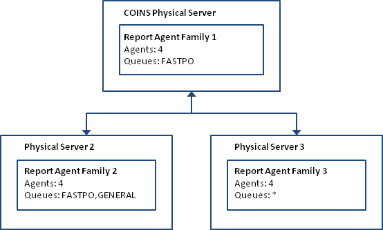

This scenario is the most complicated. We have multiple physical servers, each of which is running one or more report agent families. Each report agent family may be processing one or more report queues.
